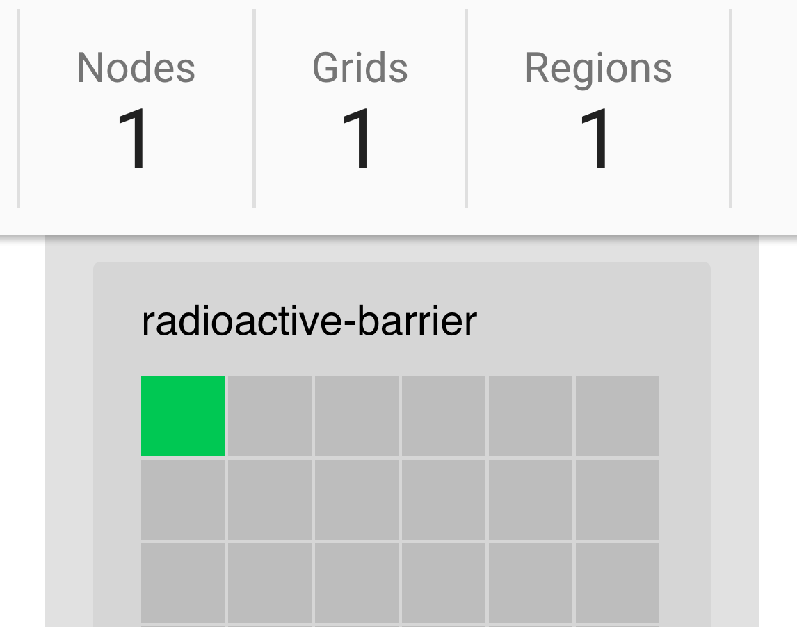

Distributed, Loosely Coupled, Shared Nothing Load Test Platform
(it scales)
It scales because



- Tim Koopmans
- CTO / Founder Flood IO
- Cow Farmer
- Child Wrangler
- Know a few things about load testing
How to scale from zero to one million requests per second
Tip: Ask Why?
"A good simulation model is worth a thousand tests"
"Last night we had 180K uniques doing something in the order of 500K requests per minute BUT the business wants us to test up to 1M requests per second for the next sale"
Estimating concurrency
We can estimate with uniques and session duration
180,000 uniques
--------------- = 15,000 concurrent users
( 60 minutes / 5 minutes)
Tip: They don't exist
"uniform hourly distributions"
Estimating throughput
We also need to estimate throughput 😳
500,000 requests per minute
--------------------------- = 33 rpm per user
15,000 users
Estimating throughput
We can start to validate business targets of 1M rps 😲
60,000,000 requests per minute
------------------------------ = 4,000 rpm per user
15,000 users
OR maybe ...
60,000,000 requests per minute
------------------------------ = 1.8M concurrent users
33 rpm per user
Preparation
☑️ Model
🗳 Script
🗳 Monitors
Ruby-JMeter
require 'ruby-jmeter'
test do
defaults domain: 'flooded.io', port: 443, protocol: 'https'
with_user_agent :iphone
header [
{ name: 'Accept', value: 'application/json' }
]
threads count: 100 do
random_timer 100, 200
get name: 'entry point', url: '/v2', sample: 10 do
assert json: '.status', value: 'OK'
end
post name: 'create session', url: '/v2/oauth', sample: 10,
fill_in: {
username: 'Michel Rosen',
password: 4141414141
} do
extract json: '.access_token', name: 'access_token'
with_xhr
end
end
end.jmx
Demo Code
https://github.com/flood-io/loadtest
├── Dockerfile
├── Makefile
├── README.md
├── config
│ ├── default.vcl
│ ├── limits.conf
│ ├── nginx.conf
│ ├── supervisord.conf
│ └── sysctl.conf
├── docs
│ ├── demo_requests.chls
├── scripts
│ └── jenkins.sh
├── terraform
│ ├── api
│ │ ├── main.tf
│ │ ├── terraform.tfstate
│ │ └── terraform.tfstate.backup
│ ├── asg
│ │ ├── cloudconfig.yml
│ │ ├── main.tf
│ │ ├── terraform.tfstate
│ │ └── terraform.tfstate.backup
│ └── elb
│ ├── main.tf
│ ├── terraform.tfstate
│ └── terraform.tfstate.backup
├── terraform.tfvars
└── tests
└── load.rb